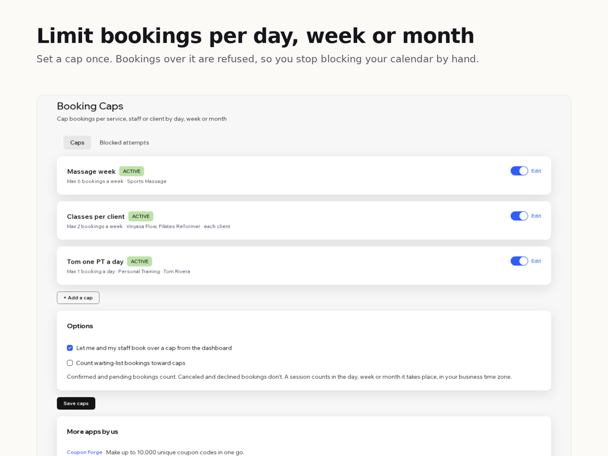

Booking Caps
Limit bookings per day, week or month
- Cap a service, a staff member or each client
- Daily, weekly or calendar-month limits
- Your own message when a limit is reached
- Checked on every new booking, not just online

What it does
Your booking calendar limits how many people join one session, but not how many bookings you take in a day, a week or a month. If you can only do 6 massages a week, the usual fix is blocking your calendar by hand.
Booking Caps adds those limits. Each cap has a scope, a period and a number: one service or several, one staff member or anyone, and optionally each client on their own. The period is a day, a week (starting Monday or Sunday) or a calendar month, in your site's time zone, and it follows the date of the session, not the date it was booked. Count bookings or count participants.
When a new booking would go over a cap, it is refused and the customer sees your message, for example "Massages are fully booked for this week. Please choose another week." The check runs on every new booking, so it covers bookings paid with a plan or at the venue too. You and your staff can still book over a cap from the dashboard if you want.
If anything goes wrong while checking, the booking goes through: a broken limit never stops you taking bookings.
The free plan has 1 active cap. Premium has unlimited caps and a log of every blocked attempt.
Price
Free
- 1 active cap of any type
- Daily, weekly and monthly limits
- Custom message for customers
Premium
$8/month, $80/year ($6.67/month billed yearly)
- Unlimited caps
- Log of blocked booking attempts
- Everything in the free plan